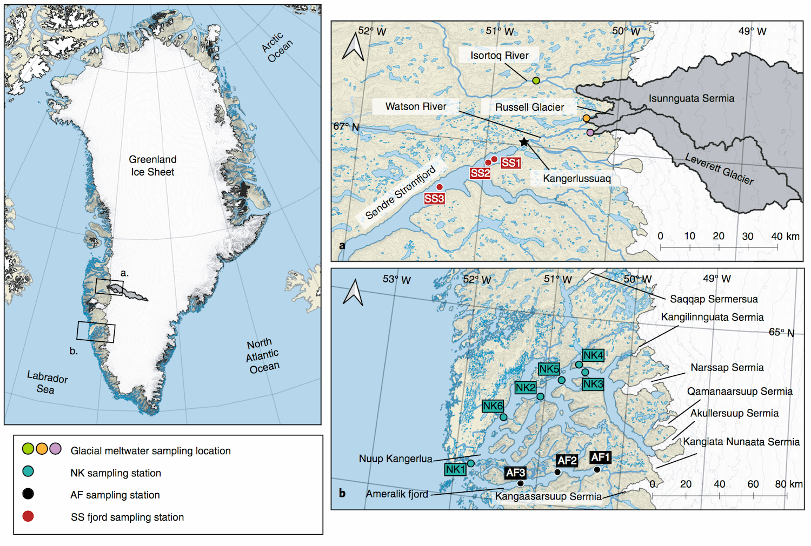

An international collaborative study found that mercury levels in
Greenland glacial meltwater compare to levels measured in industrial China.
The Greenland Ice Sheet is the second largest ice sheet Earth, covering
25% the Arctic region’s terrestrial surface. Much research has
established that this ice sheet is losing mass at a very high rate,
with this rate accelerating annually in line with the Earth’s rapidly
changing climate.
The devastating loss of polar glaciers is a hallmark of climate
change—causing the habitat loss of the iconic animals that live there
and threatening our coastline cities with rising sea levels. The team
embarked on their research journey to the Arctic, with the intent of
studying how the nutrients of Greenland glaciers could possibly
sustain coastal ecosystems. However, they were shocked by their findings.
‘They were shocked by their findings.’

‘Locations of sampling sites and stations. a,b, Locations of riverine
sampling sites and SS sampling stations (a), and NK and AF sampling
stations (b). Field sites are indicated on the map of the Greenland
Ice Sheet (left) as a and b. Major glacial inputs into the NK and
AF are indicated in b.’ | Hawkings (2021) / Nature
The levels measured in the fresh, natural Greenland glacial meltwater
contained mercury levels as seen in polluted, industrial rivers in
China. Whilst the team expected the presence of mercury in the samples,
as it is typically found in many rivers, it was completely surprising
to see a concentration that high.
A normal range of dissolved mercury in rivers is between one to 10 ng/L,
however those found in the Greenland meltwater was 150 ng/L. Water
samples from glacial flour—areas of particularly high erosion—contain
mercury levels up to 2000 ng/L.
This study collected water samples from the Watson River, Isortoq River,
Russell Glacier, Søndre Strømfjord and Kangerlussuaq in Greenland.
Until now, only a few studies in Canada, Alaska, the Himalayas and
some areas elsewhere in Greenland have been identified as natural
mercury stores.
‘We didn’t expect there would be anywhere near that amount of mercury
in the glacial water there,’ said co-author Dr Rob Spencer, Associate
Professor of Earth, Ocean and Atmospheric Science at Florida State University.
Why is mercury in the ice sheets?
Whilst concentrations of mercury run-off have significantly increased
due to industrialization, the element also occurs naturally in the
environment. It is common for mercury to enter the environment through
volcanic emissions, as well as the weathering of rocks which contain
the element.
Multiple studies have all observed the recent trends of the increase
of mercury in the Arctic waters, however it was largely uncertain what
the source of these high concentrations were. Some studies linked the
higher presence of mercury in the Arctic waters to atmospheric
circulations which carry mercury to this region; although this new
discovery in Greenland now reveals how large of a role glacial
meltwater plays in influencing ocean water biochemistry.
Whilst the source of mercury in the Greenland Ice sheet itself is
unknown, John Hawkins believes, ‘it is very likely coming from the
local rock itself, as opposed to a fossil fuel combustion or other
industrial source.’
Another 2016 study by Soerensen and colleagues found that a third of
mercury in the Arctic water column comes from terrestrial environments.
Greenland Ice Sheet. | Adam Lyberth / Destination Arctic Circle
What is Mercury and why is it so dangerous?
Mercury is a heavy metal and toxic in even small doses. Though the
severity of symptoms depends on the level and duration of the exposure.
However, a more toxic form of mercury is the neurotoxin methylmercury.
This is because methylmercury is also absorbed more easily than
inorganic mercury and can thus access the body to a greater extent.
Methylmercury is produced by bacteria who live in the sediments at the
bottom of the ocean, which extract inorganic mercury from the water
column and ‘methylate’ it (i.e. add a methyl molecule to it). This
metabolic process is not well understood by scientists and it has been
difficult to identify the genes associated with it.
Meanwhile, DNA metagenomic analysis carried out on meltwater samples
have suggested that many of the sub-glacial microbial communities in
Greenland are actually able to cope with mercury toxicity. These
microbes have a special ‘mercuric reductase’ enzyme, which allows
them to remove the methyl group from methylmercury and convert it back
to its slightly less toxic form mercury (though still toxic!).
‘Methylmercury is also absorbed more easily than inorganic mercury.’
However, this pathway is very poorly understood, as it has been assumed
that it is also these communities which are methylating the inorganic
mercury in the first place! The team also found that there was also a
higher proportion of methylmercury in the fjørd surface waters than in
other regions of glacial meltwater. This may indicate that the
bacteria responsible for the methylation of mercury may live in higher
concentrations in fjørd sediments.
Soerensen and colleagues found elevated methylmercury levels in the
Arctic Ocean but could not account for its source. The team quotes: ‘
Riverine methylmercury inputs account for approximately 15% of inputs
to the surface ocean, but of greater importance in the future is
likely given increasing freshwater discharges and permafrost melt.’
It is therefore important for more research to be conducted in this
area—the Greenland study showed just how much mercury is currently
locked up in our ice sheets! The more ice that will melt due to the
warming climate, the more mercury will enter the ocean and provide
these microbes a lot more ingredients to produce methylmercury.
What will happen if it enters the aquatic food chain?
Methylmercury tightly binds to fish proteins, entering the fish’s body
either through their gills or through consumption of smaller prey.
According to analysis conducted by the Department of Environmental
Conservation in Vermont, methylmercury levels bioaccumulate one
million times higher in certain carnivorous fish, when compared to
the levels in the surrounding water.
The bioaccumulation of methylmercury does not only pose a health risk
to animals, but to the people who rely on the Arctic fishing industry.
Consumption of products which contain unsafe levels of mercury can
lead to methylmercury poisoning.
According to UCSF Health, this poisoning can lead to blindness,
cerebral palsy, deafness, impaired mental function, growth problems,
lung impairments and small heads in newborns. Unborn babies and
infants are particularly vulnerable to methylmercury, as pregnant
women consuming unsafe products are at high risk of passing this
toxin on to their child through their placenta.
Although, whilst the symptoms cannot be reversed, they usually do not
get worse unless the individual is exposed to more methylmercury.
Nuuk, Greenland. | Filip Gielda / Unsplash
Future implications
The recent study by Hawkings and colleagues took samples from meltwater
rivers that drain a 4000 kilometer2 area of the Greenland
ice sheet and the two fjørds. The more climate change prevails, the
more mercury will be unleashed into Arctic coastal regions.
So far, policies involved in managing the level of toxic elements in
the environment, such as mercury, are surrounding industrial sources.
Policies must be put into place to even keep ‘naturally occurring’
mercury locked up in their reserves.
This once again comes down to nation’s needing to meet their net-zero
emissions targets, in order to limit any more temperature increases.
This is not a Greenland-isolated issue—atmospheric temperature is
influenced by the entire globe.
Melting glaciers will cause a lot more devastation than ‘just’ rising
sea levels. Our current global ecosystem has adapted to the delicate
biochemical balance of the Earth and atmosphere over millions of
years—everything is fine-tuned to thrive in precise conditions.
So, even if the Greenland ice sheet is a store for ‘natural mercury’,
it is human-driven activity which is causing elements to go places it
should not be in the first place!
Hawkings J., Linhoff B. and Wadham J., et al. (2021) Large subglacial source of mercury from the southwestern margin of the Greenland Ice Sheet. Nature Geoscience. Pages 1-7.
Parks, J.M., Johs, A., Podar, M., et al. (2013). The Genetic Basis for Bacterial Mercury Methylation. Science. Volume 15, Issue 339, pages 1332-1335.
Soerensen A., Jacob D., Schartup A., et al. (2016) A mass budget for mercury and methylmercury in the Arctic Ocean. Global Biogeochemical Cycles. Volume 30, Pages 560-575.